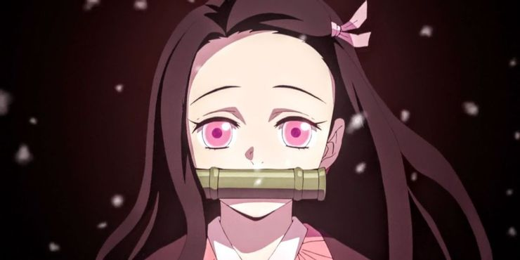

ABOUT ANIME
it's the Demon Slayer main character,it took me 6 hours
drawing it but it really was the best image i ever copy.
this is an audio which u can listen to while checking my website
ANIME MAIN CHARACTER
this are the principale characters
- TANJIRO KAMADO
- NEZUKO KAMADO 
- GIYU TOMIYOkA
- TAMAYO
Tanjiro is likable because he is one of the most
hardworking, empathetic, and honest characters in Demon Slayer.
The demon sister of Demon Slayer's protagonist doesn't say much, but her actions
make her easy to love. Though she is a demon, the way Tanjiro carries her around and
pampers her might have some convinced she is a princess instead.
Tomioka is cool. The stoic way he dances through the same water techniques that
Tanjiro uses in battle makes it impossible to dislike him.
On top of
that, it is Giyu that led Tanjiro to Urokodaki and the Demon Slayer Corps.
Without him, the plot of Demon Slayer would have ended in the first couple of episodes.
Tamayo finds herself in a spot near the top of this list because she is the only one
that seems capable of helping Tanjiro succeed
in reverting his sister back into a human.
Providing the protagonist with a way
to accomplish his main objective is one of the quickest ways to earn
the respect of
series fans.
Now u can choose which of this characters get ur
intenstion the most , by selecting an option
Here you have the trailor of Demon Slayer Season 2
if you are interested click on the vedeo below..
FAVORITES
| MOVIES | SERIES | ANIME |
|---|---|---|
| the conjuring | outlander | demon slayer |
| cruella | game of thrones | attack on titan |
WORK AT CLUB
it's Rotaract Club Carthage Sunshine,is a service club sponsored by
the Rotary Club Carthage La Baie
District 9010.
Here u can see some of our work, i hope u enjoy watching it.
click on the vedeo below ..